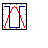

Ptplot
Ptplot 5.1p1
is a 2D data plotter and histogram tool implemented in Java. Ptplot can
be used as a standalone applet or application, or it can be embedded
in your own applet or application.
Ptplot a part of Ptolemy II, but
Ptplot is also available as a separate download.
We've made a small standalone
example available that uses Ptplot3.1.